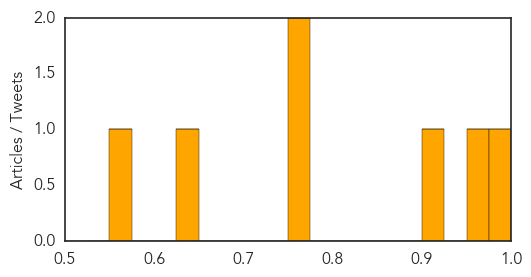

Chikungunya
30-Day Web Trend
3 alerts, 0 warnings
30-Day Twitter Trend
0 alerts, 0 warnings

Article Locations
Article Confidences

Top Articles:
Top Tweets:
-
No tweets found for May 30, 2015
Influenza
30-Day Web Trend
0 alerts, 0 warnings
30-Day Twitter Trend
0 alerts, 0 warnings

Article Locations
Article Confidences
Top Articles:
- 0.982
- Bird flu shows U.S. not ready for next big outbreak
- 0.972
- What Pasadena Dog Owners Should Know About Dog Flu
- 0.919
- Q&A: How bird flu outbreak affects Nebraska, Iowa consumers
- 0.751
- May 29, 2015 Archives
- 0.751
- May 29, 2015 Archives
- 0.644
- Poultry farmers demand compensation for birds infected with bird flu
- 0.570
- 10 incidents discovered at the nation's biolabs
Top Tweets:
-
No tweets found for May 30, 2015